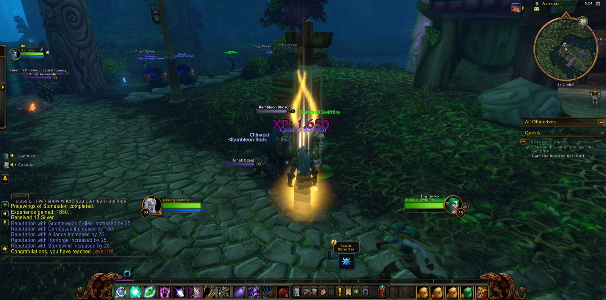
Cassidy Darkstar took up the road again at Mirkfallon Lake in the Stonetalon Mountains. Rambleon the hunter joined him there, and the two kept company for the whole of that long road, from its first step to its last. Cassidy fell once by the lake at the very start, and that was soon behind him. Then he went to work among the Pridewing Wyverns and their Consorts, until six and twenty of the wyverns and nine of the Consorts lay still, and a Blackened Basilisk with them. He took many pictures by that water. From there he climbed to Stonetalon Peak, where he slew a Sap Beast, and the errand called "Journey to Stonetalon Peak" was seen through.
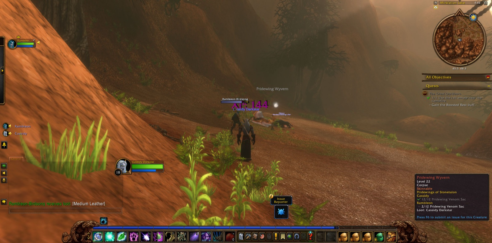
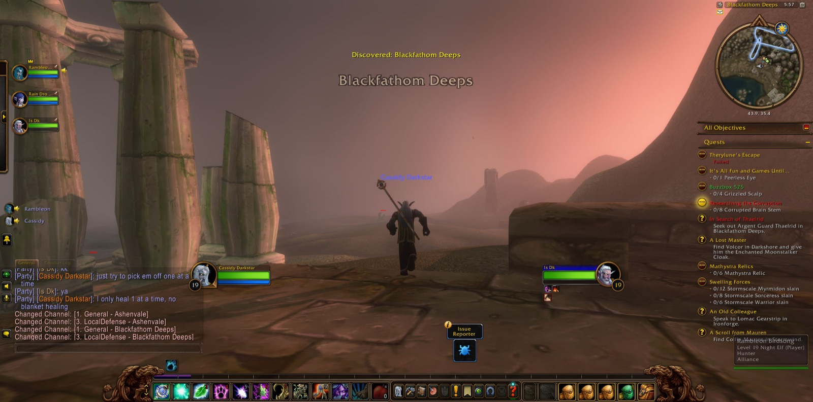
He came down by The Veiled Sea to The Zoram Strand and went on through Ashenvale, past Lake Falathim and Maestra's Post, to Astranaar. There he gave up "Pridewings of Stonetalon," and with it Cassidy came into the strength of his nineteenth level. A picture was taken at that moment. Then he turned north into Darkshore, by Twilight Vale and Twilight Shore, to Auberdine, and afterwards to Remtravel's Excavation. At the Excavation two more companions joined him: Raín, a hunter, and Is, a warrior. Together they put down Cracked Golems, Gravelflint Scouts and a Geomancer, and three Stone Behemoths. With these companions he went down into Blackfathom Deeps, taking up "Knowledge in the Deeps" at its threshold. They pressed on into The Drowned Sacellum, where Murkshallow Snapclaws, a Skittering Crustacean and a Blindlight Murloc fell before them. Raín and Is went their own ways at the edge of the Deeps, and Cassidy thanked them in his heart for their fellowship on that stretch of the road.
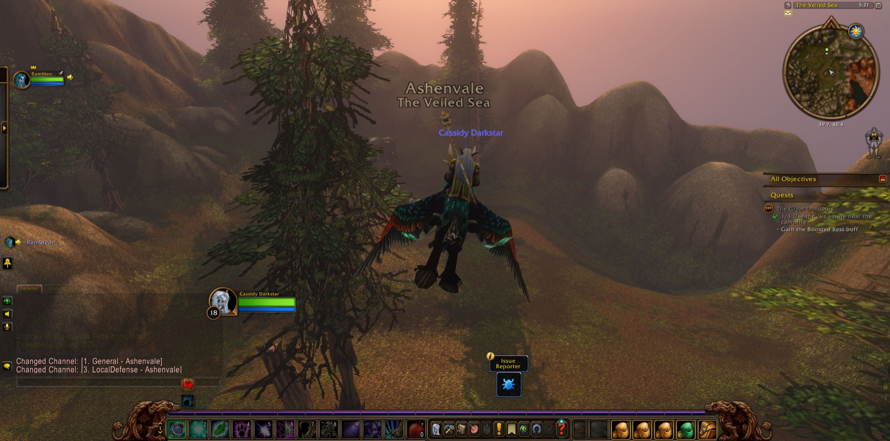
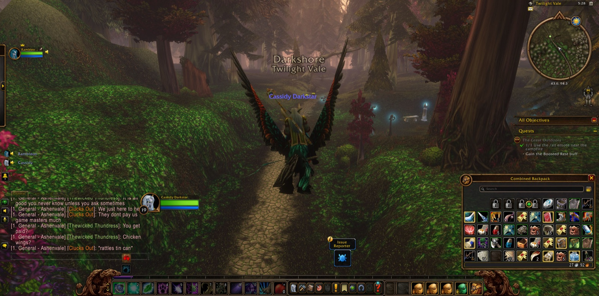
He passed through Darnassus and the Cenarion Enclave, and down to Rut'theran Village, and crossed The Veiled Sea to Stormwind Harbor, where Rambleon stood with him once more. In Cathedral Square he completed "Expanding Horizons." He then took up "Making Do," which asked him to carry Alexston's Reply to Thundris Windweaver in Auberdine, and "Humble Beginnings" with it. In the Mage Quarter he finished "A Scroll from Mauren" and accepted "Devils in Westfall" and "Retrieval for Mauren." By the Valley of Heroes he went out into Elwynn Forest. At Goldshire he gathered more errands, among them "A Fishy Peril," which he saw through almost as soon as it was given.
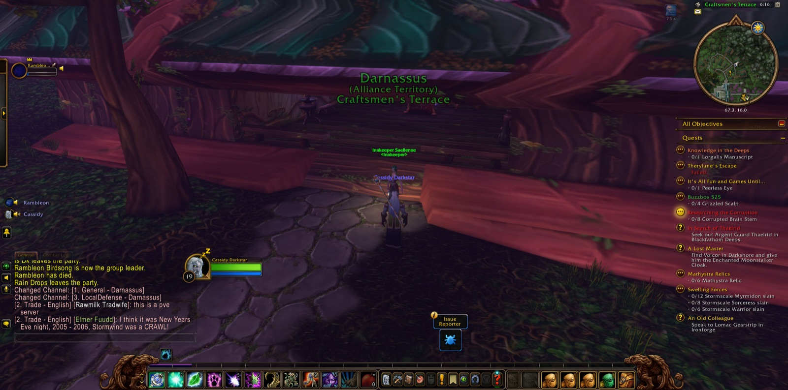
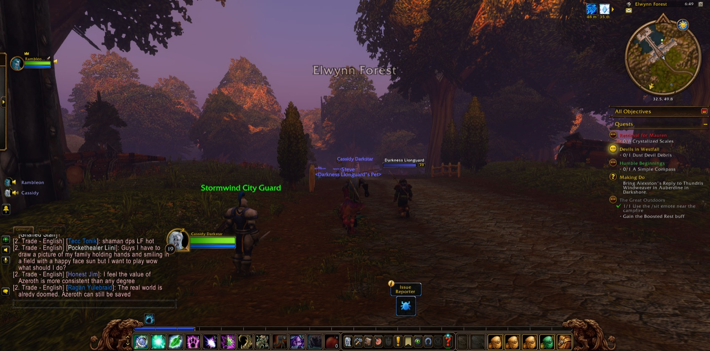
So Cassidy came into Westfall. At The Jansen Stead, Verna Furlbrow gave him her recipe for Westfall Stew to bear to Salma Saldean, and at Saldean's Farm it was delivered. He slew a Harvest Watcher and a Dust Devil, whose debris he gathered for Mauren's errand. At Sentinel Hill he made his report to Gryan Stoutmantle and received new charges: "The Defias Brotherhood," "Patrolling Westfall" and "The People's Militia." About Stendel's Pond he fought long and stubbornly, and sixteen Riverpaw Brutes and as many Riverpaw Bandits were overcome.
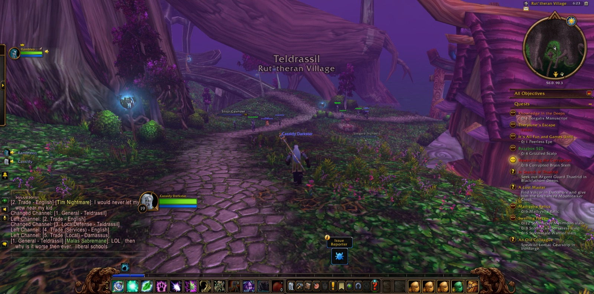
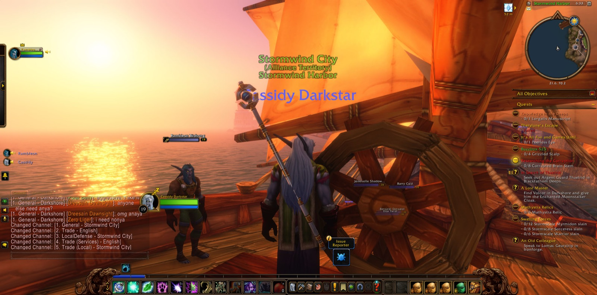
At the last he came to Nighthaven in Moonglade, where "A Lesson to Learn" was finished and "Trial of the Lake" was given him. He passed by Lake Elune'ara and back through Darkshore, by the Ruins of Mathystra, Rut'theran and Auberdine. Then he crossed the Zoram Strand and came again to Stonetalon Peak, where he had stood before. The Trial of the Lake was still to be undertaken, and the road went on.
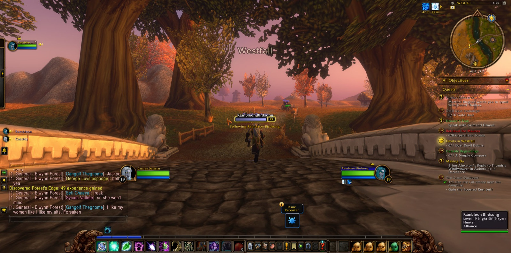
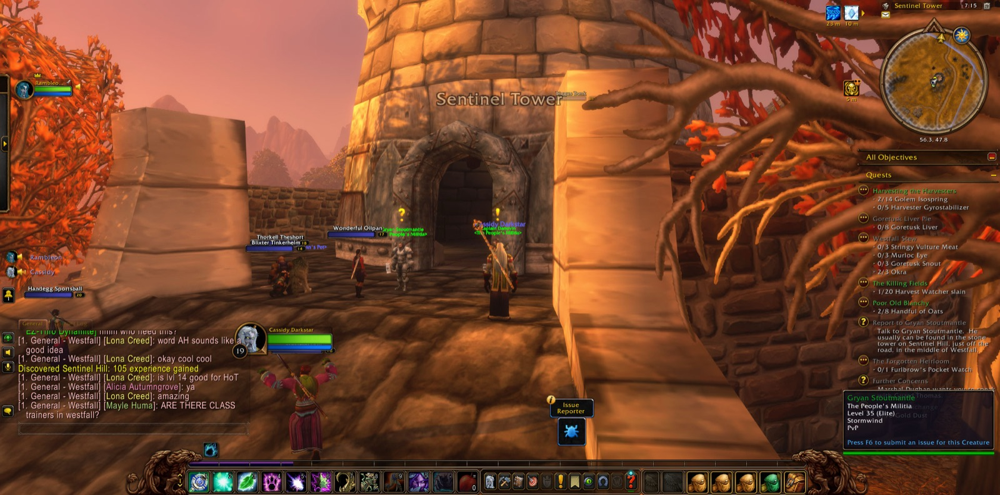
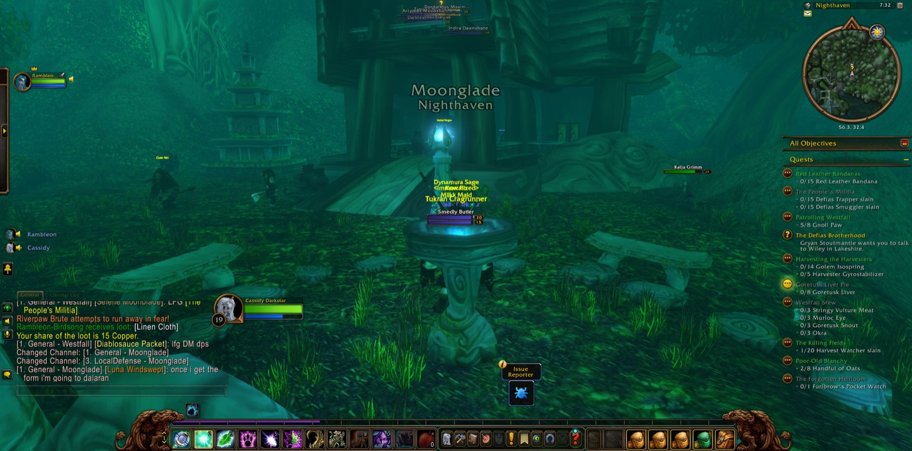
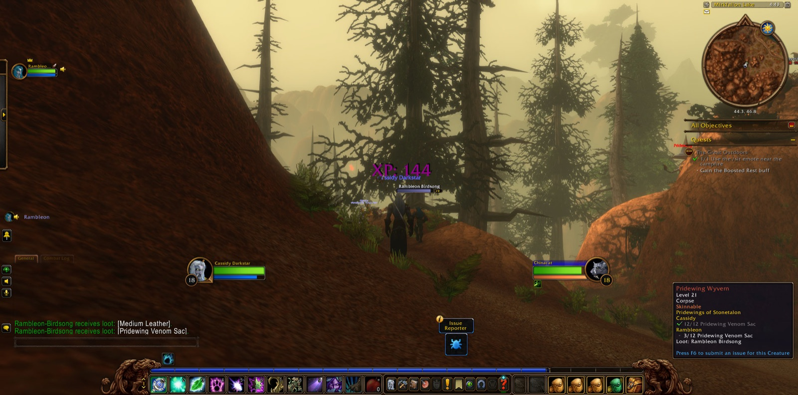
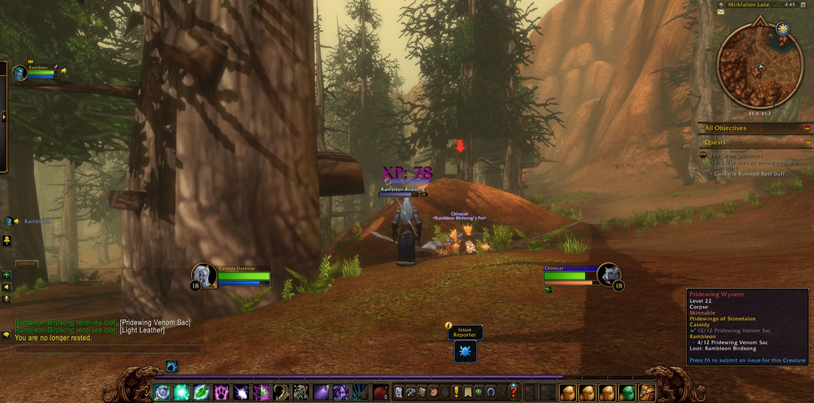
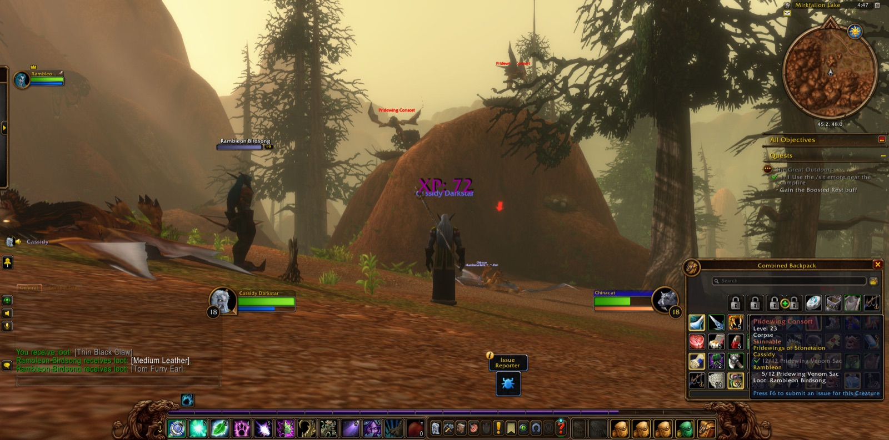
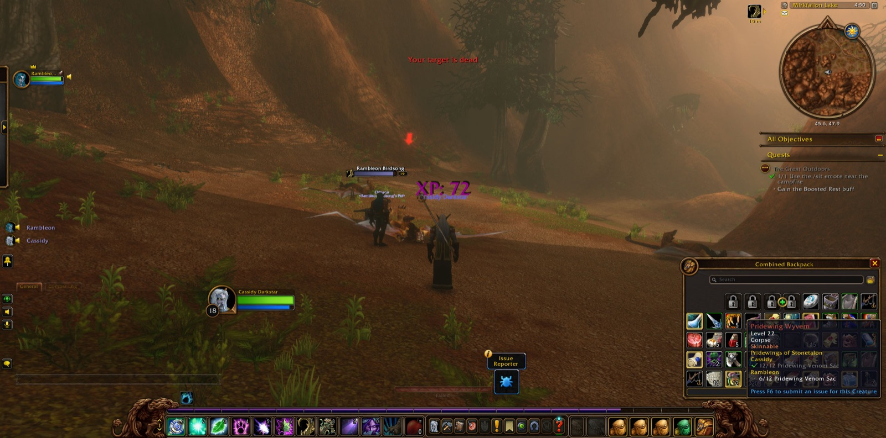
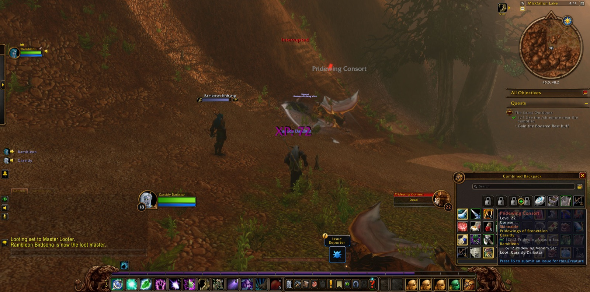